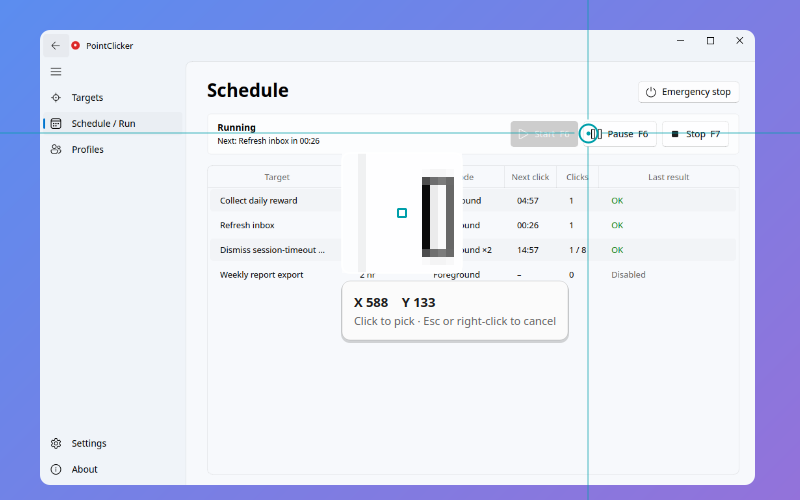
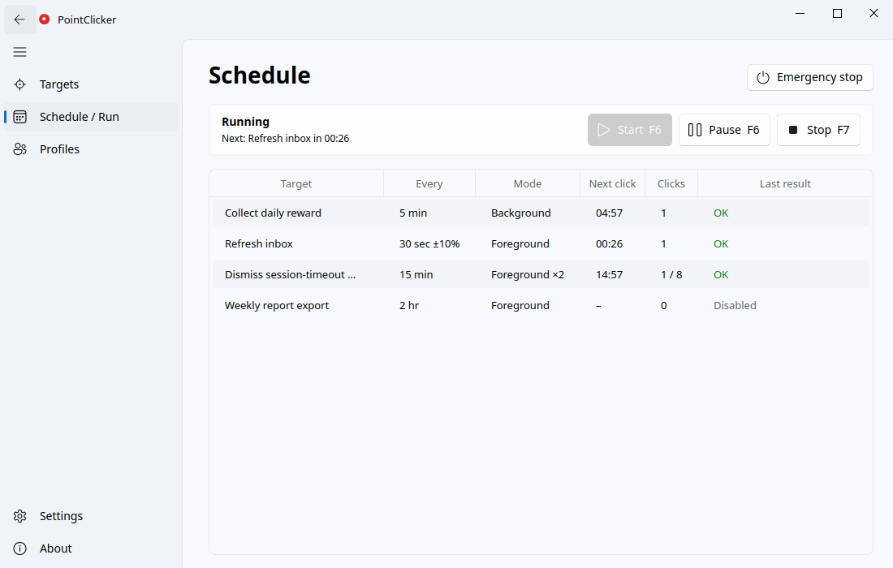

Everything an auto clicker should do
Built for clicking fixed points reliably, for hours, without getting in your way.
Many targets, own schedules
Each point has its own interval (seconds to hours), start delay, repeat count and optional random jitter.
Background clicks
On Windows and X11 the click goes straight to the window, even behind others. Your mouse stays where it is.
Follows windows
A target remembers its window. Move the window and the click moves with it; close it and clicking stops.
Pixel-exact picking
Pick a point on a frozen view of your screen with a magnifier and live coordinates.
Hotkeys and emergency stop
F6 start/pause, F7 stop, F8 emergency stop. Global, and you can rebind them.
Works on Wayland
Clicks through the desktop's permission portal on GNOME and KDE, plus full X11 and Windows support.


Install in one minute
No administrator rights needed. Every download is checked against the release's SHA-256 checksums.
Windows 10 / 11
- Download PointClicker-Setup.exe and run it.
- If Windows shows "Windows protected your PC", click More info, then Run anyway (the app isn't code-signed yet).
Or in PowerShell:
irm https://raw.githubusercontent.com/khalilullahnaul/pointclicker/main/install.ps1 | iexLinux
One line, no sudo (AppImage, with an app-menu entry):
curl -fsSL https://raw.githubusercontent.com/khalilullahnaul/pointclicker/main/install.sh | shDebian, Ubuntu, Mint: download the .deb, then:
sudo apt install ./pointclicker_*_amd64.debFrequently asked questions
What is PointClicker?
PointClicker is a free, open-source auto clicker for Windows 10/11 and Linux (X11 and Wayland). It clicks fixed points on screen, each on its own schedule (interval, start delay, repeat count and optional random jitter), and follows the target window when it moves.
Is PointClicker free and safe to download?
Yes. PointClicker is free and MIT-licensed, its source code is public on GitHub, and every release is built from that source by public GitHub Actions with SHA-256 checksums published next to the downloads. Windows SmartScreen may warn because the app isn't code-signed yet: click More info, then Run anyway.
Can an auto clicker click without moving my mouse?
Yes, on Windows and on Linux X11. PointClicker's background mode sends the click straight to the target window, even if it's covered by other windows, and your mouse never moves. Some apps, including many games and browsers, ignore such clicks; for those, use foreground mode, which moves the pointer, clicks and puts it back.
Does PointClicker work on Wayland?
Yes. On Wayland (GNOME, KDE Plasma and others) PointClicker clicks through the desktop's Remote Desktop portal, which asks for permission once. Wayland doesn't let apps click in the background or restore the pointer position, so clicks are foreground clicks there. Global hotkeys use the GlobalShortcuts portal, or a one-time setup on desktops without it.
Can I auto click several points at different intervals?
Yes. Every target has its own interval in seconds, minutes or hours, its own start delay and repeat count, and optional random jitter, so one point can click every 30 seconds while another clicks every 5 minutes. Profiles keep separate sets of targets.
How do I stop the auto clicker instantly?
Press F6 to start or pause, F7 to stop, or F8 for an emergency stop that also disables every target. The hotkeys work while other apps are focused and can be changed in Settings.
Is it safe to use an auto clicker in online games?
Games with anti-cheat (Vanguard, Easy Anti-Cheat, BattlEye and others) can detect automated input and may ban your account. Don't use PointClicker, or any auto clicker, in those games.
Does PointClicker run on macOS?
No. PointClicker supports Windows 10 and 11 and Linux with X11 or Wayland.